如何让hexo个人博客被搜索引擎收录
之前发过几篇博客，讲了如何使用hexo这个框架生成静态博客页面，在hexo博客的定制化这篇文章里也讲了我自己对Hexo博客是如何定制的，包括怎么启用评论、浏览量功能。
但如果大家都不知道你的博客，那评论也没啥意义了吧，这篇文章就讲一讲我自己是怎么让谷歌和百度收录我的博客的。
Github Pages的一个问题
如果你直接尝试让百度去收录你的github pages的话，会发现一个问题，百度抓取不到github pages的地址，由于历史原因，github把百度的爬虫给禁用了，所以虽然github pages是真的好用，但还是得忍痛割爱，换个路子。
使用Vercel网站托管服务
有很多网站提供静态网站托管服务，我试过Coding.net和vercel这两个，coding.net的托管服务是依托于腾讯云的，很早以前是免费的，但现在貌似有一定限制了，具体什么情况我有点记不清了；后来试了vercel，它也能提供免费的静态网站托管服务，而且操作起来比coding.net舒服，目前是免费的，这是它的官网vercel。
vercel如何与github联动
进入vercel，可以使用github账号登录。
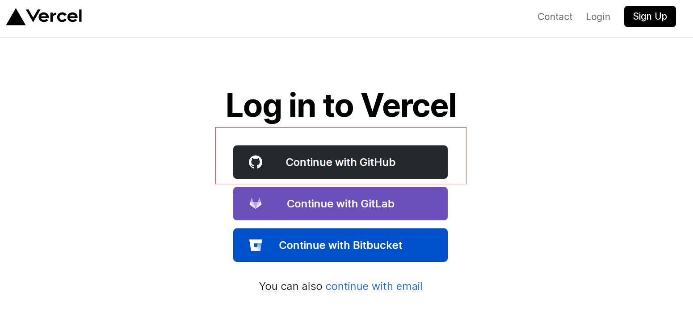
coding.net与vercel都可以从github上导入repository，但vercel比coding.net好的一点在于第一次与github关联并授权以后，你以后往github上push的任何更改，都会同步到vercel上，而coding.net并不能这样（虽然可以通过hexo的deploy配置往coding.net自动部署）。
在vercel上选择New Project，然后如果你是用Github账号登录的话，这边会显示你的所有Github仓库，选择github pages的仓库即可。
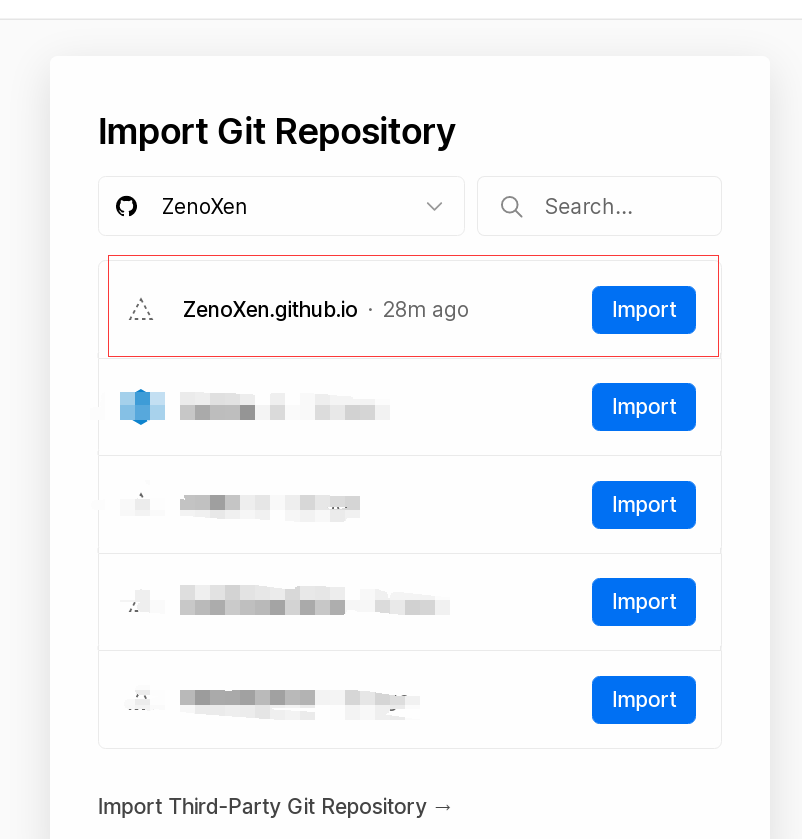
中间导入的几个步骤就不截图了，按默认设置一直点下一步即可。最后成功导入后应该可以看到congratulations，点击那个visit就可以查看托管在vercel上的网站了。
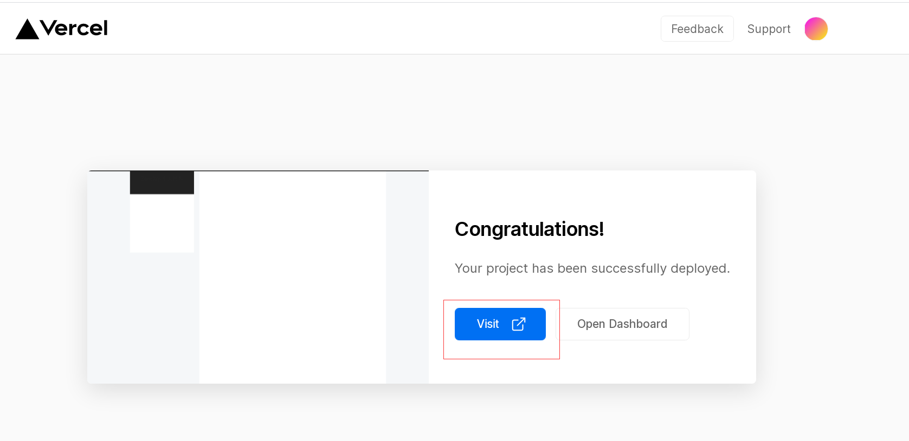
这里有一点要注意的是，虽然内容与github pages上部署的那个网页一模一样，但vercel是一个独立的副本，只不过每次github pages那个仓库更新的时候，会同步更新到vercel这边而已。
使用自己的域名
在你的vercel项目这边找到settings项。
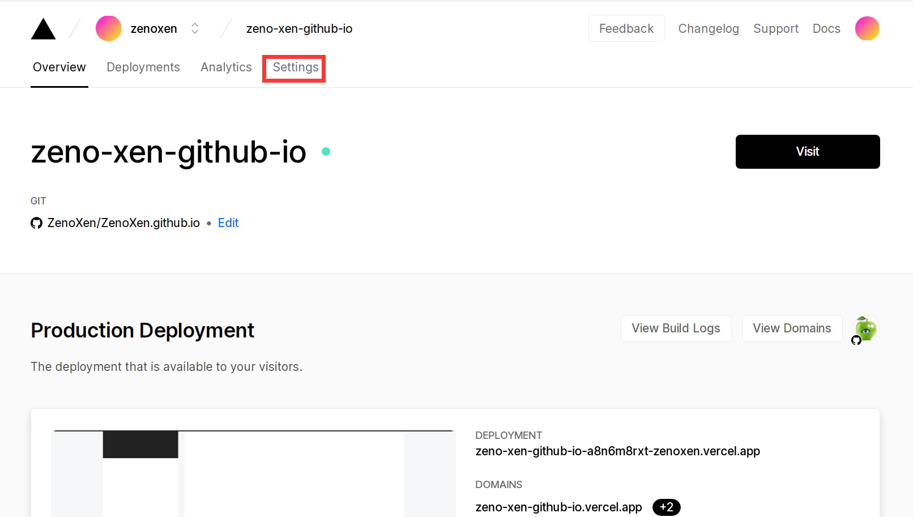
点击Domains项，可以看到里面有一条默认的域名项，这是vercel提供给你免费使用的，如果你的项目名没改的话，一般就是github里那个仓库名为前缀，看起来怪怪的，你可以自己点击edit来修改域名记录，注意一下，vercel.app是固定的域名，不要改掉，你可以改的是这个vercel.app前面那一堆。
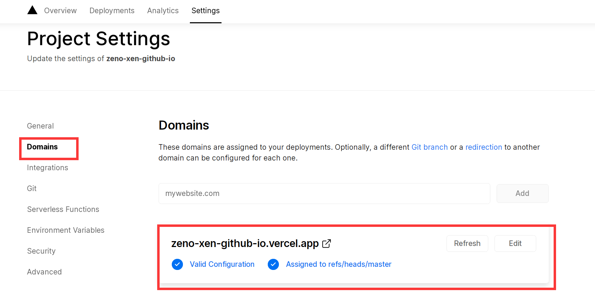
到这里为止，实际上你已经拥有了一个与Github Pages不同的独立域名，即vercel.app，但如果你既想通过Vercel来部署博客站点，又想脱离vercel.app这个域名的话，唯一的方法就是买一个自己的域名了。我自己是通过阿里云买的域名，一个cn域名，第一年优惠很大，买下域名10块钱不到，所以比较建议买一个，过期了以后续不续倒是无所谓，早买早享受。
假设你已经买了一个自己的域名，那么仍然点击vercel这边的Domains项，输入你自己的域名，记住要带上主机记录，比如我的域名是zenoxen.cn，那么你在输入自己域名的时候，最好加一个主机记录，比如www.zenoxen.cn或者blog.zenoxen.cn，主机记录具体是什么倒无所谓。
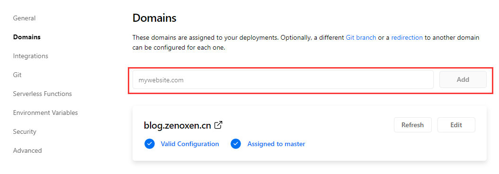
这里假设我加的记录是www.zenoxen.cn，结果发现了一个Invalid Configuration的错误。
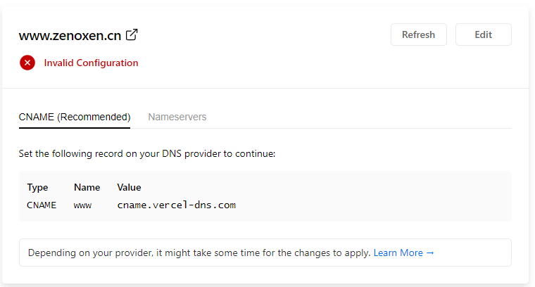
这实际上是因为没有将zenoxen.cn这个域名的www主机记录指向vercel服务器而造成的，换句话说，就是现在还每法通过www.zenoxen.cn来访问部署在vercel服务器的这个博客应用。一个比较简单的解决办法是给zenoxen.cn这个域名设置一个CNAME记录，将其指向vercel的服务器域名。
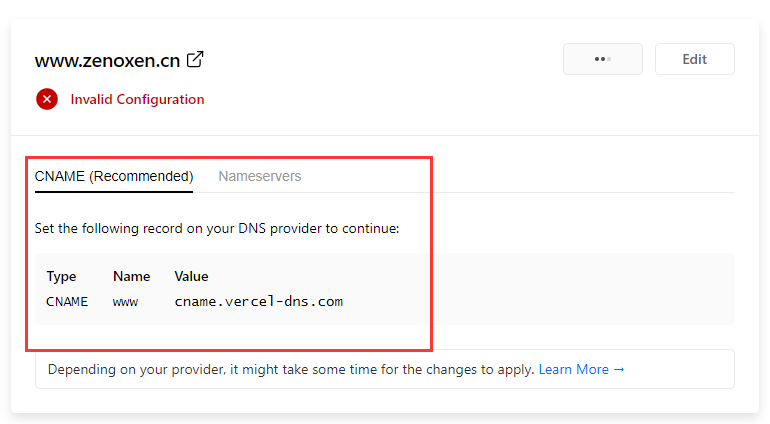
CNAME记录在你买域名的代理商那边就可以设置，比如我是在阿里云那边买的，那么我去阿里云那边找域名控制台。
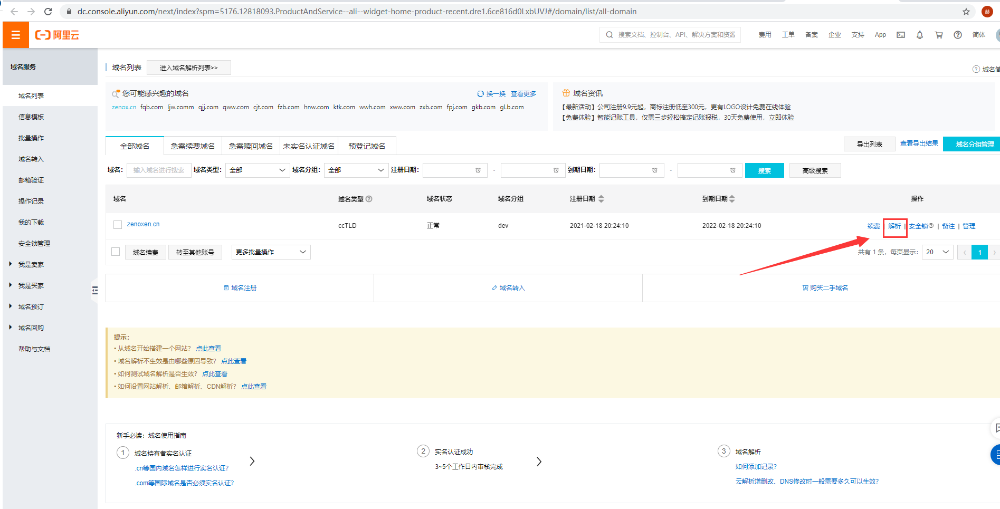
添加vercel提供的那条CNAME记录，指向www.zenoxen.cn。
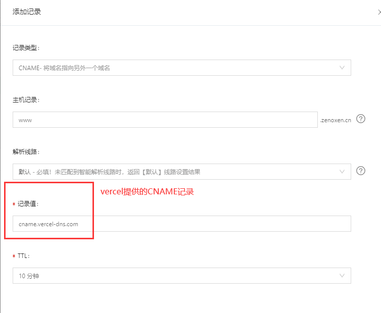
如此一来，那边自动就会检测到www.zenoxen.cn已经指向了vercel服务器，Invalid Configuration的报错也会消失了。
搜索引擎收录
接下来的一步就是让搜索引擎收录你的博客，无论你是使用vercel的域名，还是使用自己的域名，理应都可以被搜索引擎收录了。
实际上大部分搜索引擎收录流程都是类似的，我自己提交过Google和百度，方式都是大同小异的。
主流的搜索引擎都有几种收录方式：API推送、提交Sitemap、手动提交，这里简单介绍一下。
API推送
API推送是在页面里嵌入这样一串js代码，调用这个api的作用是把当前这个页面提交给搜索引擎，所以在每个页面里都嵌入这样的代码，就可以实现全站的推送。
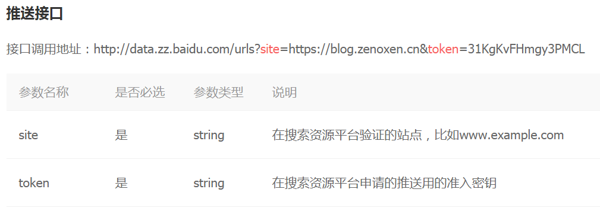
这里就以百度为例，展示一下如何使用API来让百度收录我们的博客。
首先进入百度站长平台,选择菜单栏上的用户中心，站点管理，添加网站。
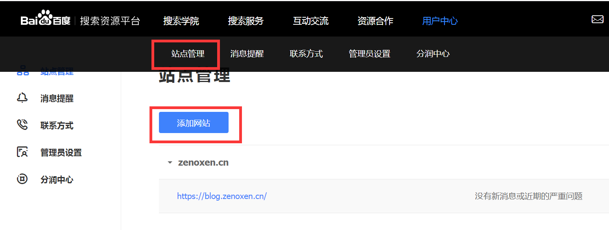
随后选择协议头，并输入你的主机记录，比如我的域名是zenoxen.cn，主机记录是www.zenoxen.cn。
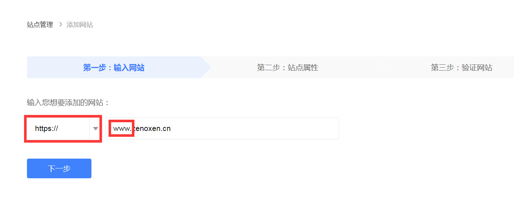
第二步选择站点属性其实不重要，按你的博客性质勾选即可。
第三步选择一个验证方式，这里验证的是你对域名与站点的所有权，我们选HTML标签验证，然后把百度提供给你的那一串html标签记下来，准确的来说，是记那一串content，即验证码。
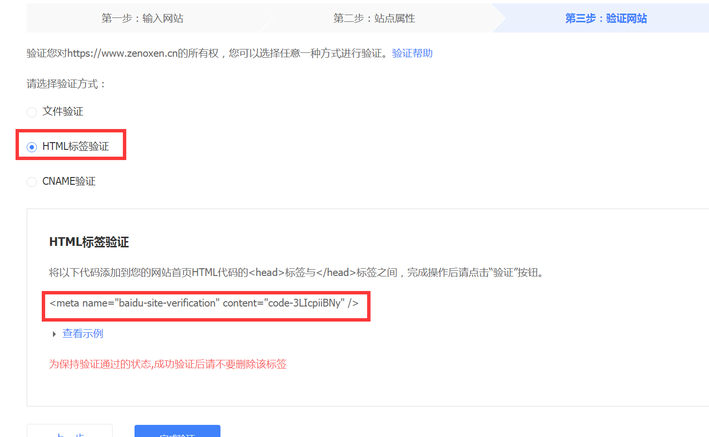
接下来就是将百度的验证码嵌入hexo页面中，如果你跟我一样用的是next主题，那么最新的next主题配置文件里应该包含了这样的配置信息，将baidu_site_verification修改为百度给你的验证码即可，无需将整个html标签嵌入到某个页面中，next主题会自动帮我们完成这个工作。
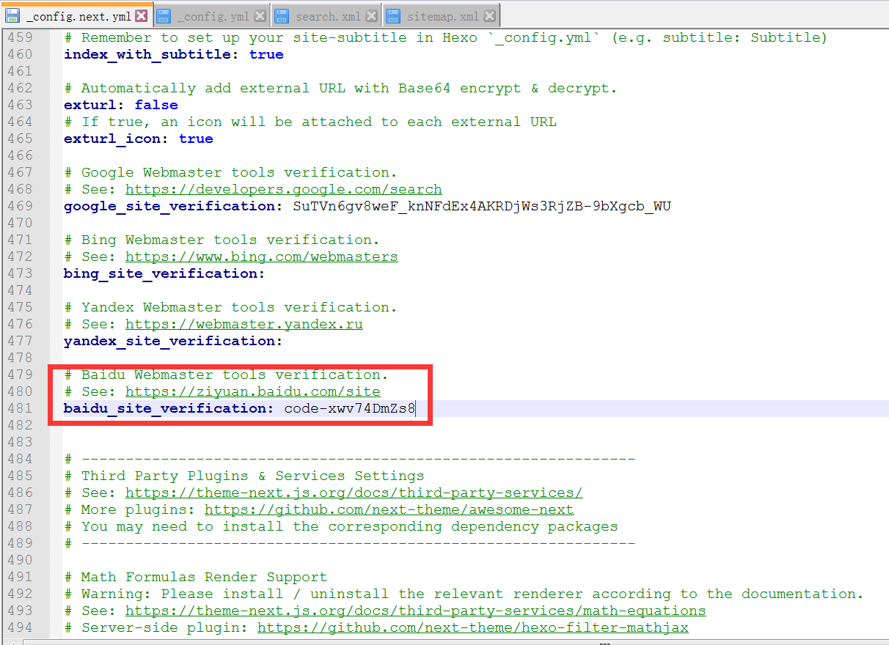
这边添加完后，使用hexo clean&&hexo g&&hexo d，将页面重新部署到你的vercel中去，部署完成后，即可点击百度那边的完成验证。
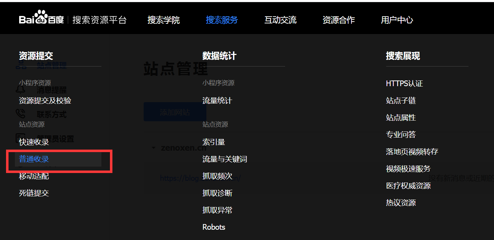
完成验证后，从菜单里选择普通收录，然后就是收录的环节了，点击API推送，记下百度给你的API地址。
在hexo项目根目录安装hexo-baidu-url-submit，运行下列命令即可。
npm install hexo-baidu-url-submit
在hexo根目录的_config,yml文件中，加入这些配置，count是一次性提交的url数量，你可以根据自己页面数量来决定，但百度每天都有3000条url的提交上限，这个要注意一下，host是你在百度添加的主机记录，token是从百度给你API地址中取出来的即url中的token参数，path是生成的url文件路径，这个不用改名，baidu_urls.txt即可。
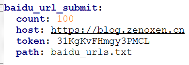
最后在deploy中加入下列配置，这样你每次使用hexo d的时候，hexo-baidu-submit都会将生成的baidu_urls.txt提交给百度。
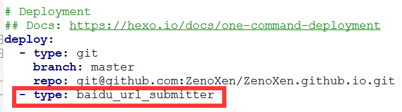
执行部署一条龙命令，如果最后出现了下面这种信息，说明已经成功将页面提交给百度了。
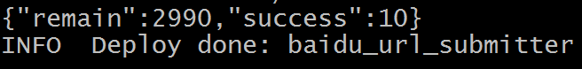
正常来说，第二天之内，在百度站长平台就可以发现你前一天成功提交的记录了，但要注意的是提交成功了不代表百度就会收录你的网页，从提交成功到收录成功，这个时间可能很长（据说几周到几个月都有），这也是我觉得百度不如谷歌的一点，百度收录效率真的没谷歌高…
Sitemap
Sitemap一般来说是一种xml文件，其中包含的是一个站点的结构，比如这是我博客的Sitemap。
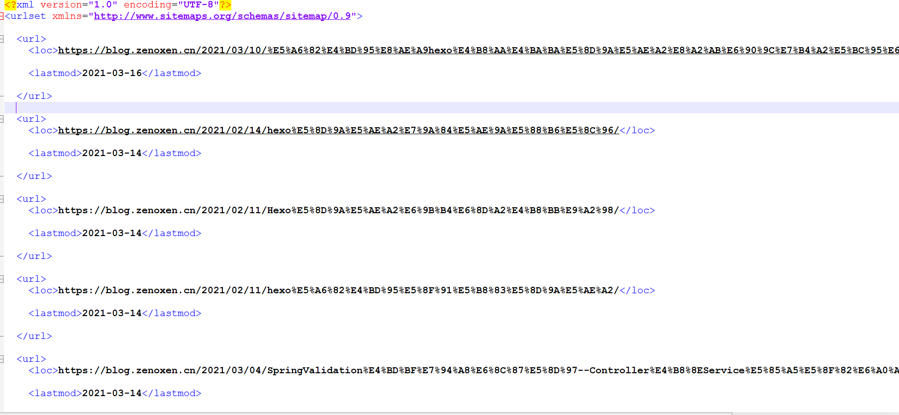
可以看到，Sitemap里包含了站点中所有的页面的url，Sitemap推送的原理是将你的Sitemap文件放在站点根目录下，然后让搜索引擎到你的站点取Sitemap，如此搜索引擎就可以根据Sitemap来了解你的站点结构了。
我之前尝试过用baidu的sitemap提交，一开始几次百度都成功读取了我的sitemap，但后来不知道啥原因，百度那边显示无法读取我的sitemap了，所以后来百度我换了API提交。所幸的是，谷歌的sitemap一直没有出过问题。
谷歌的提交是通过search console，添加站点和验证站点的操作其实跟百度差不多，都是使用HTML标签认证，这里就不深入介绍了。讲讲怎么让hexo自动生成sitemap，并提交给谷歌。
首先在你的hexo项目根目录下安装hexo-generator-sitemap，使用下面命令即可。
npm install hexo-generator-sitemap
安装完这个插件后，在根目录下的_config.yml中加入以下配置。
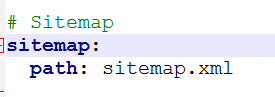
随后你就可以执行hexo clean&&hexo g了，正常的话，应该会在public目录下产生一个sitemap.xml，确认生成了以后，就hexo d，将项目部署到vercel上。
此时，你去访问站点根目录的sitemap.xml应该就可以直接看到xml的内容，比如我的博客sitemap，可以通过https://blog.zenoxen.cn/sitemap.xml来进行查看。
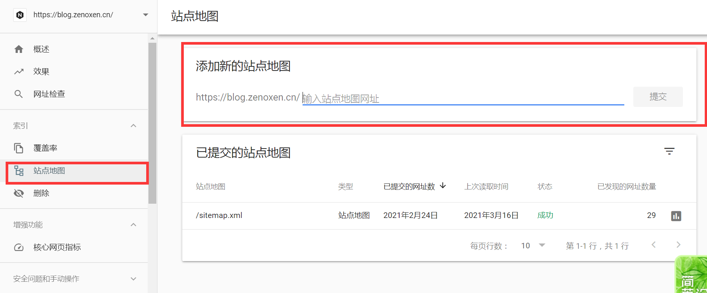
然后在谷歌的search console中添加站点地图即可，成功添加后，谷歌应该会在几天之内读取你的sitemap，从sitemap读取成功到收录成功，效率之高是百度没法比的…我自己的站点，谷歌只用了一天就完成收录，真的很快。
手动提交
从名字就可以看出，手动提交是个比较繁琐的过程，需要你自己手动将站点里的页面url提交到搜索引擎里，我实际上没用过这种提交方式，不过操作应该是将你的页面url一个一个的复制粘贴给搜索引擎，让它逐个收录。